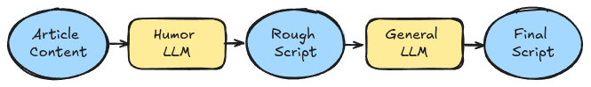
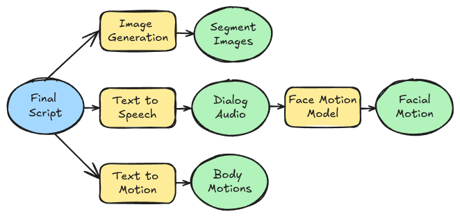
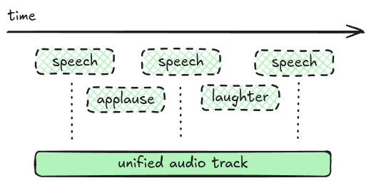
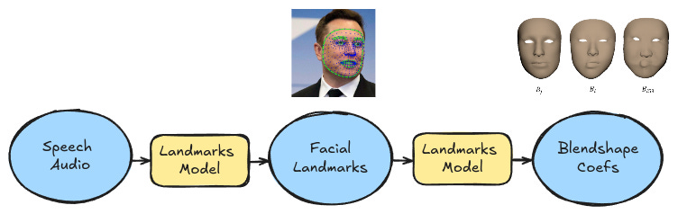
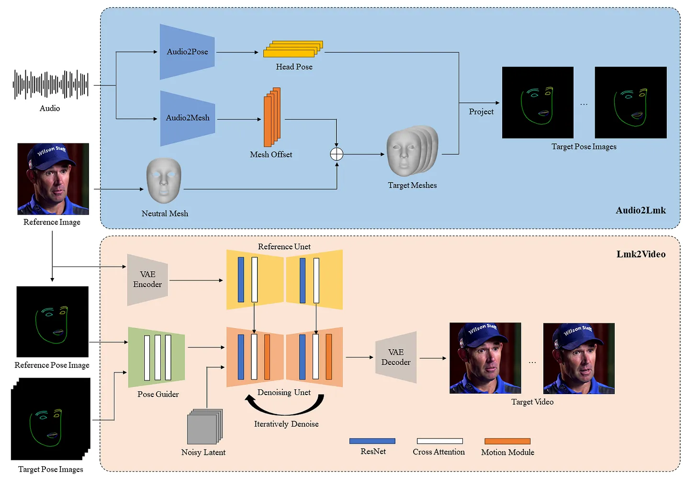
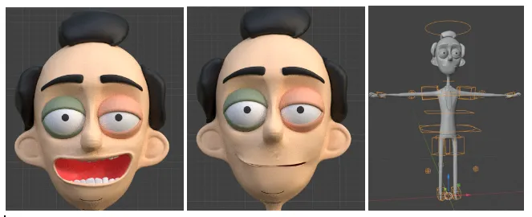

Late Now with Walter Spanks
Many classic late night shows and segments like “Weekend Update” from Saturday Night Live follow a similar structure where they look at a collection of news articles and comment on them, making jokes and adding commentary. Given this repeatable structure and recent advancements in generative models, can we create shows like this on the fly?
Accompanying code is on Github: https://github.com/michaelgiba/late_now
The Show Concept
To begin we need a show name and host. After iterating on concepts with LLMs + Midjourney I picked the show name “Late Now with Walter Spanks”. The show’s seasoned host covers news topics and cracks jokes. I generated a short character bio and a variety of assets.
Rough Process
I split the show generation into a few separate phases:
- “Planning”: A news article link is provided as input and we process it to produce a structured script
- “Packaging”: We create a variety of assets to support the script (images, audio, facial movements, body motion)
- “Rendering”: Using the assets and the script we create the video
Planning

This phase incorporates several passes of different LLMs to produce a structured “script”. This includes breaking the show into segments, determining dialog for the character, dictating body motion, timing for sound effects and more.
Humor LLM
General purpose LLMs (GPT4o, Llama3.1) often produced uninteresting or robotic commentary on the articles, clever prompting helped but didn’t fully eliminate the issue. To remedy this I tested several ablated models from throughout the community on HuggingFace. Most of these were Gemma or Llama3.1-based and ranged in quality I ended up settling on a 4-bit quantized version of Gemma2-9b Abliterated” which I found funnier. No fine tuning was performed and the model ran locally.
General LLM
Once the rough dialog was produced, a general purpose LLM deemed the “screen writer” would create a JSON format structured script that included character motion descriptions, sound effect durations and more. Free GPT4o and Llama on Groq were the primary models used here.
Packaging

Once a script is created, resources need to be generated for rendering the show:
Sound
For each item in the structured script we need to generate corresponding audio and stitch them together to make the show’s audio track. The script writing LLM produces two types of queues for sound: dialog or sound effects. For dialog I used Suno’s “bark small” model for its small local footprint and solid quality. Sound effects were static WAV files for applause, laughter, gasps and more. Dialog and sound effects were stitched together through simple waveform manipulation in numpy

Facial Movements
Given the generated speech and text, we need to generate a set of corresponding facial positions for the speaker. 3D character facial positions can be represented as a set of blendshape coefficients. We can follow a two-stage process to generate these from speech audio:

- For speech-to-facial-landmark generation I spliced out the first half of a video-to-video model, AniPortrait. (Pictured in blue below.)
- Next these landmarks are passed through a Google Mediapipe model, Blendshapes V2, to predict corresponding coefficients in an ARKit-compatible format.

Body Motion
Since body motion is generally independent from speech it was handled differently than facial movement. The goal was given a text prompt describing an action, generate a set of motion animation files which could be mapped to a mesh’s skeleton.
There are quality off-the-shelf models for text-to-motion which have emerged recently. I chose to use MoMask which generated smooth text conditioned full body animations with raw joint positions or IK constraints.
Rendering
To render the animations from packaging we need a mesh for which we can map them to. For this I used a mesh created in Blender, rigged using AutoRig Pro with 52 ARKit-compatible shape keys for the face.

I leveraged Blender’s python API (bpy) to control the rendering of the scene frame-by-frame. Code performs the mapping of blendshape coefficients to the mesh shape key values (what Blender calls blendshapes) and connects the generated animations to the mesh skeleton. The system then advances the animations in lockstep and renders a sequence of files.

The rendered frames then get composited together with other scene content such as subtitles and the TV panel to generate a full broadcast.
Article Example
When passing an article as input we can get short shows of configurable length. The following example was set to ~100 words and provided a link to this Quanta article Even a Single Bacterial Cell Can Sense the Seasons Changing
or a very meta segment based on this very article:
Plain Text Example
The staged process of planning allows for the option to bypass article extraction and for raw scripts to be provided as input. For example:
*Shows an image of a smiling emoji*
(Applause)
Walter: Hey there! (Waving)
(Oooh)
Walter: Signing off (Salutes)
(Awww)
*Shows an image of a popcorn bucket*
(Applause)
Walter: Listen up folks... [chuckle]
(Oooh)
Walter: We can generate short form content this way
(Applause)Generations
There are a myriad of options that can be set which impact generations. Some of the notable ones influencing quality and speed include:
- Show script length
- Blender Rendering Engine Options (Cycles vs. EEVEEE, samples)
- Number of iterations for image generation
A 100-200 word show takes roughly 5-10 minutes to generate end-to-end on a single machine with ~12GB VRAM. The system accepts either free form text or news article links as input.
Future Ideas
This was a side project to explore a new approach for generating content with a focus on controllability, but I think it could be extended in a couple of interesting ways. A couple of potential extensions someone could try if they are interested are:
- Optimize end-to-end generation time to seconds using multiple machines
- Deploy the system to generate short funny videos for any user provided article via a web service
- Launch a never ending show like the surreal “Nothing Forever”
- Extend to use 3D generation models for new characters or even scenes
- Pass each frame through a img2img model to restyle or make it look realistic
Feel free to reach out at michaelgiba@gmail.com if you have any questions/ideas.